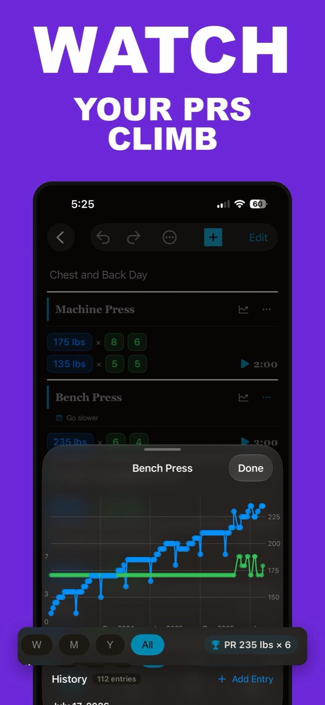

Free Apple Notes Workout Templates (Copy-Paste PPL, Upper/Lower, Full Body)
You don't need to download anything to start logging your lifting. A tight Apple Notes workout template — one note, one line per exercise, numbers you update between sets — is one of the fastest ways to track workouts on an iPhone, and it costs nothing. This page gives you three copy-paste templates (push pull legs, upper/lower, full body), the formatting system that keeps a note usable for months, and an honest answer to whether Notes can carry your training long term.
The short answer: use one line per exercise in the format Exercise: weight reps, reps, reps — for example, Bench Press: 135 8, 8, 6. Keep one note per week, pin the current one, and copy last week's note forward so you always see what you're trying to beat. Apple Notes handles this well for the first few months. What it can't do is draw charts, spot PRs, or stop old numbers from scrolling out of sight.
The template format that actually works in Apple Notes
Every workable Notes log comes down to the same line shape: exercise name, colon, working weight, then reps separated by commas.
Bench Press: 135 8, 8, 6
That one line says everything — what you lifted, how heavy, and how each set went. The rules that keep it fast:
- One line per exercise. No tables. Notes tables are fiddly to edit with a plate in one hand, and they break when you dictate.
- Colon after the exercise, commas between sets. Consistent punctuation means you can scan a month of training in seconds — and search "Bench Press" to pull up every session you've done it.
- Write working weight only. Warm-ups don't need a record. If you change weight mid-exercise, add a second line ("Bench Press: 145 5, 5").
- Date goes in the note title. Notes sorts by edit date anyway, but a title like "Push — Jul 27" makes the list readable.
If typing between sets annoys you, dictation handles this format fine: "Bench press colon one thirty-five, eight comma eight comma six."
Copy-paste Apple Notes workout template: push pull legs
Paste each day into its own note, then swap the exercises and numbers for yours. The weights below are placeholders, not a prescription.
Push — Mon
Bench Press: 135 8, 8, 6
Overhead Press: 85 8, 8, 7
Incline DB Press: 50 10, 10, 8
Lateral Raise: 20 12, 12, 12
Triceps Pushdown: 45 12, 10, 10
Pull — Wed
Deadlift: 225 5, 5, 5
Lat Pulldown: 120 10, 10, 8
Seated Cable Row: 130 10, 10, 10
Face Pull: 35 15, 15
Barbell Curl: 65 10, 8, 8
Legs — Fri
Squat: 185 8, 8, 6
Romanian Deadlift: 155 10, 10, 10
Leg Press: 270 12, 10, 10
Leg Curl: 90 12, 12
Standing Calf Raise: 100 15, 15, 15
Upper/lower and full-body templates
Training four days a week, upper/lower usually beats PPL — each muscle gets hit twice. Three days or fewer, run full body.
Upper A
Bench Press: 135 8, 8, 8
Barbell Row: 115 8, 8, 8
Overhead Press: 80 10, 10
Lat Pulldown: 110 10, 10
Barbell Curl: 60 12, 12
Triceps Pushdown: 40 12, 12
Lower A
Squat: 185 8, 8, 8
Romanian Deadlift: 155 10, 10
Leg Press: 250 12, 12
Leg Curl: 80 12, 12
Standing Calf Raise: 90 15, 15
Full Body — 3x per week
Squat: 165 8, 8, 8
Bench Press: 125 8, 8, 8
Barbell Row: 105 8, 8, 8
Overhead Press: 75 10, 10
Lat Pulldown: 100 10, 10
A template is only worth keeping if the numbers on it move. The simple rule these templates assume: add a rep each week until you hit the top of the range on every set, then add weight and start over. There's a longer walkthrough in our guide to tracking progressive overload.
How to track workouts in Apple Notes: the weekly system
The template is the easy part. The system is what stops your log from turning into a junk drawer by September.
- Make a "Training" folder. Keeps gym notes out of your groceries and passwords.
- Keep one master template note. Your split, ideal weights and target reps. Never train in this note — it's the clean copy.
- Each week, copy the master into a new note. Select all, copy, paste into a note titled "Week of Jul 27". Last week's numbers are your targets to beat.
- Train inside the weekly note. Overwrite the reps and weight as you finish each set. Tap the line, fix the number, done.
- Pin the current week. Pinned notes sit at the top; unpin when the week's done and the next one takes its place.
Two optional upgrades: turn each exercise line into a checklist item if you like ticking things off, and tag notes #push or #legs so Notes can filter them later. Neither is required — the one-note-per-week habit does most of the work.
Is Apple Notes good for tracking workouts?
Honestly: yes, up to a ceiling. Using Apple Notes to track workouts gets the fundamentals right — it's free, already on your phone, works with no signal in a basement gym, and opens instantly with zero learning curve. That's more than can be said for a lot of fitness apps. It also beats a paper notebook on one axis that matters: search. Type an exercise name and every session containing it appears, which a paper gym notebook can't do without a lot of page-flipping.
| Apple Notes | Paper notebook | Dedicated tracker app | |
|---|---|---|---|
| Logging speed | Fast, if you keep the format tight | Fast, no phone needed | Fast once you learn it |
| Last week's numbers | Only if you copy notes forward | Flip back a page | Shown automatically |
| Progress charts | No | No | Yes |
| PR detection | Manual | Manual | Automatic |
| Rest timer | Separate Clock app | Gym clock | Built in |
| Searchable history | Yes, by exercise name | No | Yes |
| Cost | Free, built in | A few dollars | Varies — free tiers to subscriptions |
If you're deciding between Notes and a spreadsheet, the trade-offs are different again — a sheet can chart, but it's miserable to edit on a phone mid-set. We've broken that down in workout spreadsheet vs app.
Where the note hits its ceiling
Every long-term Notes logger runs into the same four walls, usually around month three:
- History is either overwritten or buried. Overwrite last week's numbers and the trend is gone. Keep every week as its own note and your best squat from March is a scroll-and-squint expedition.
- No charts. You can't see whether your bench has moved in eight weeks without reading eight notes and doing the math in your head.
- No PR detection. You'll hit a five-pound PR on a Tuesday and not notice, because nothing is comparing today's line to every line before it.
- No rest timer. You're alt-tabbing to the Clock app, or guessing.
Full tracker apps like Hevy and Strong solve all four — both are genuinely good, with charts, automatic PRs and built-in rest timers as of mid-2026 (we compare them in Hevy vs Strong). But plenty of Notes people have tried them and bounced off, and it's usually not the apps' fault. It's the format: picking exercises from lists, tapping through screens, confirming sets. If you log in Notes because typing a line is faster than operating an interface, a heavier app fixes the history problem by breaking the thing you liked.
The same note, live-rendered
This is the gap Monolift was built for. Your workout in Monolift is a plain-text note — the same colon-and-commas line as every template on this page. Type Bench Press: 135 8, 8, 6 and it renders live into a card with tappable weight and rep pills. You keep the typing speed; the app gets structure it can actually do something with.

Because sets are pills instead of characters, editing stops being cursor surgery. Long-press a number and slide to change it — no keyboard, about two seconds a set. Plate mode steps through real plate loads with a haptic tick. Rest timers run as Live Activities on your Lock Screen, so there's no Clock app juggling.
And the ceiling problems go away without you doing anything: every line you log feeds a per-exercise chart, and weight and rep PRs are flagged automatically. Your March squat isn't a scroll expedition anymore — it's a point on a line.

To be clear about what Monolift is not: it's iPhone-only (iOS 17+), English-only, and after the 7-day trial logging requires a subscription. If the free note is doing its job, keep the free note — our broader guide on how to track workouts covers making any method stick. But if you've caught yourself scrolling for last month's numbers, the note has already told you what's missing.
If you log in Apple Notes, you already know how to use Monolift — same typing, plus pills, charts and automatic PRs.
Download on theApp StoreFree 7-day trial · iPhone · iOS 17+